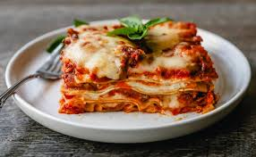

Lasagna

Description
Making lasagna can be time-consuming, but the results are well worth the wait.
You'll find a detailed ingredient list and step-by-step instructions in the recipe
below, but let's go over the basics:
Ingredients
- Meat: This super meaty lasagna has sweet Italian sausage and lean ground beef.
- Onion and garlic: An onion and two cloves of garlic are cooked with the meat to add tons of flavor.
- Tomato products: You'll need a can of crushed tomatoes, two cans of tomato sauce, and two cans of tomato paste.
- Sugar: Two tablespoons of white sugar add subtle sweetness and enhance the flavor of the sauce.
- Spices and seasonings: This lasagna recipe is flavored with fresh parsley, dried basil leaves, salt, Italian seasoning, fennel seeds, and black pepper.
- Lasagna noodles: Use store-bought or homemade lasagna noodles.
- Cheeses: Parmesan, mozzarella, and ricotta cheese make this lasagna extra decadent.
- Egg: An egg helps bind the ricotta so it doesn't ooze out of the lasagna when you cut into it.
Steps
- Gather all ingredients.
- Place flour on a marble or wooden work surface. Make a well in the center and crack in eggs; add salt.
- Gently beat eggs using a fork, incorporating surrounding flour, until mixture is runny. Bring remaining flour into the mixture using a bench scraper until dough forms a ball. Mix in water, 1 tablespoon at a time, if dough feels too stiff.
- Knead dough with your hands by flattening, stretching it, and folding the top towards the center. Turn 45 degrees and repeat until dough is soft and smooth, about 10 minutes.
- Shape dough into a ball. Place in a bowl and cover with plastic wrap. Refrigerate until firm, 30 minutes to 1 hour.
- Divide dough into 3 equal portions. Take one piece and flatten it a bit with your hands. Dust a work surface with flour and roll dough out using a rolling pin 5 to 6 times. Turn dough 45 degrees and roll out again, 5 to 6 times. Keep rolling and turning in the same way until dough is evenly very thin. When you hold up the dough, you should be able to see your fingers through it.
- Cut pasta dough into rectangular sheets to fit your baking dish using a pastry wheel or a knife. Transfer lasagna sheets to a floured kitchen towel and let air-dry for about 30 minutes before assembling.